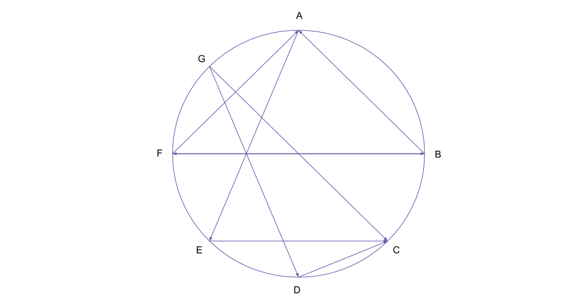
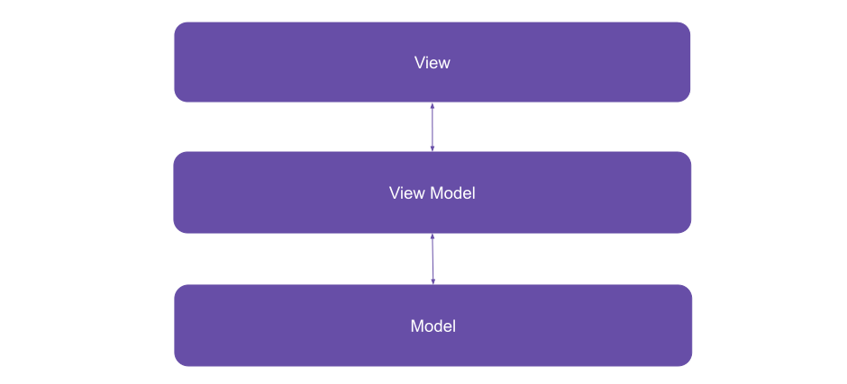
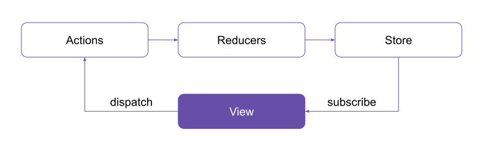

Let’s consider several classes with public methods. Let’s also consider that they are on the same hierarchical level and they can all see each other and call methods on one another. We can draw the following schematic indicating the dependency topology.
Let’s consider now what happens when component A needs a change in component D. We can obviously go ahead and make that change, but odds are that is going to have a knock-on effect on other components that depend on it such as X and Y. Changes on these would potentially have more cascading effects and so on. So what we are left with is a very fragile and brittle structure, where changes are problematic. Because the existing structure is brittle, developers tend not to touch it, but instead add various hacks on top of it, which over time only makes matters worse.
In a big ball of mud architecture everything can see (and potentially depend) on everything else.
But direct dependencies aren’t the only culprit. Client-side apps are notorious for posing problems for maintainability, because of their event driven nature. Async events that trigger other portions of the application to redraw which in turn trigger other events (for example a textChanged event might trigger another API call that would trigger update event etc.). This was quite typical in the days of jQuery and it led many teams to just scrap their frontends altogether and rebuild the UI using newer libraries such as Knockout or Ember.
A Glimpse Of Hope: MVVM To the Resque?
Event based big balls of mud were such a problem for WinForms applications that Microsoft came up with a pattern called MVVM when they introduced out Windows Presentation Foundation. The fundamental idea here is there is a view-model that’s being updated (which acts as an abstraction layer), and not the UI itself. The WPF engine knows how to keep the view and the view model in sync smartly. This means that a lot of events such as a text being changed are triggered only as a result of a user action, not internal updates. KnockoutJS and Angular use a similar approach.
With MVVM, M refers to the domain model. This can be things such as users, records and so forth. The view refers to what’s visible on screen, which can be buttons, inputs etc. And finally, the view model is to an object that mimics what can be seen on screen — for an input in the view, there will usually be a text string in the view model, for a button there would be a command etc. Separation is the name of the game here: we don’t react directly to events in the UI, we introduce commands and data-binding, and the layout engine knows how to resolve them.
React / Redux
It was also issues with maintainability that led Facebook to develop some coding patterns (components with an unidirectional data flow, as opposed to bidirectional databinding), a virtual DOM with reconciliation and the Flux architectural pattern, that is also unidirectional.
Then came Redux and tightened things up a bit.
Normally, with React (as with most UI component frameworks) you have a UI hierarchy, which works as follows:
- You have a root compomponent that contains the navigtional structure.
- There’s a router that maps page components to invididual routes.
- For each route, there’s a root component which we call a “page”.
- Each page is a component tree in and of itself.
At one point in time, the standard way of building things in the React community (as pioneered by Dan Abramov) was to separate the rendering part and the “connected” part of each component in two separate classes. The rendering part was supposed to be a pure function. And yes, this was consiered dogmatic, meaning that you would have to do it for each component, even if that component didn’t need to fire off Redux actions. If, for some reason, the component had to react to prop changes, an intermediat component would have to be sandwiched between the functional one and the container. The code would look something along these lines:
function myComponent() {
return (
// render some code here
)
}
// the connectorWhere as w/o it it’s:
function myComponent() {
return (
// render some code here
)
}
// the connectorWhile there is little doubt that the dispatchers and the reducers tidy things up — this approach introduces some friction in updating state, so it is used sparingly, the global state can be problematic, and there’s quite a lot of debate what actually belongs to the application state and what belongs to component state.
Generally, we want code components to expose a stable interface and use information hiding. We also want them to be focused on one thing (the single responsibility principle). If code exeposes public properties, odds are other code will be using it, which leads to coupling. The same applies to UI components: they should just do one thing (display certain details for a certain domain object), show a form etc. So arguably, if we show a bunch of form fields, we can most likely keep the state in the component, or use some kind of form library that handles state itself, not move it to the global app state. If we build a date-picker control, it can keep internal props inside the component state etc.
Keeping state in the global store, mutating it and accessing it should be a concious and well thought out decision.
Just as keeping everything in the global state should be avoided, so should reacting to prop changes in components and firing off other Redux actionss. Let’s look at why:
- Several child components can be connected to the Redux state, and this state is being passed to date as props in the connector. There is usually a lot of shared state (like catalog data etc.).
- Upon receiving prop change notifications, they can in turn perform actions that trigger API calls, state updates in Redux and other prop change notifcations. Many times, they originate from child components deep inside the component tree. These components might decide they are missing some data, or data is out of date, and trigger a refresh in the sections of the app that depend on this data.
- Over time, this can lead to a lot of actions being fired off and a lot of updates being triggered, which makes the whole thing very hard to maintain.
Let’s look at what can be done to mitigate these problems.
- Don’t connect each child component to Redux, only do that from root components (which would usually be one per route).
- Isolate the sections in the Redux store per module / route.
A Quick Note On Microservices
Microservices are often touted as the antidote to problems associated with monolithic apps, such as the ubiquitous big ball of mud architectures that arise, but you can have a big ball of mud microservice architecture as well.
Normally, the prescribed way to build web APIs is to use a tiered approach:
However, over time, at the service level you might get something like:
Everything talks to everything else is a recipe for disaster.
Even if we get something like